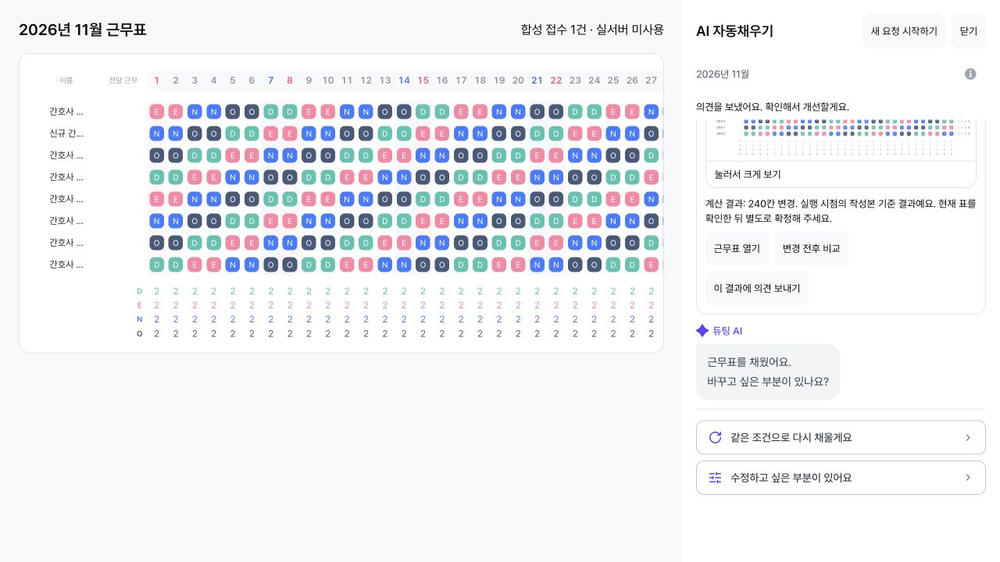

2026-10-18 · 기존 웹 PR #86 업데이트 · 보강 기준선 e3aa45b3eb6674a46b2819a70c9b7c933b2d281b · develop ca363418
설계·키 정책 / 전체 단계 수집 가능/불가 매트릭스. 전용 worktree /Users/beomjinkim/swm/dutying-web-report-idempotency에서 작업했다. 원본 checkout과 다른 저장소를 변경하지 않았다.
전송 전 sessionStorage에 UUID·scope digest·내용 digest·생성 시각·버전만 기록한다. 계정/관리자 ID·권한·병동·팀·월·대화·실행의 어느 항목이 달라도 다른 키다. 같은 탭에서 24시간 내 같은 trim 내용을 재입력하면 기존 키를 복구한다. 원문 입력은 복원하지 않는다. 성공·의도적 취소는 정리하고 새 신고로 시작한다. 저장/해시 장애 시 입력과 전송을 유지하며 새로고침 복구가 불가능함을 안내한다. 삭제 실패는 종료 마커로 보완한다. 모든 저장 조작이 실패한 뒤 reload까지 정리를 보장할 수는 없다.
실행 키·실제 표 적용·확정 코드는 바꾸지 않았다. 서버 APPLIED를 브라우저 현재 적용 증거로 보지 않는 기존 문구 검증을 유지한다. GA에는 preparation_started/preparation_paused 두 enum만 보강했다. 단계별 연결 분모·duration·병동/교대 메타데이터는 없으며 전체 이탈률/전환율/불만율을 계산할 수 없다.

테스트 fixture의 합성 접수 수이며 실제 서버 incident/outbox 수가 아니다.
로컬 macOS arm64, 실제 실행 Node v23.6.1, Vitest 4.0.14, Vite 7.2.4, jsdom. GitHub CI는 저장소 workflow의 Node 22를 사용한다. 버전 차이가 있어 전후 실행시간을 제품 성능 비교로 사용하지 않는다. 외부 키나 유료 LLM을 사용하지 않았다.
cd /Users/beomjinkim/swm/dutying-web-report-idempotency/apps/app ./node_modules/.bin/vitest run \ src/pages/make-shift/model/__tests__/schedule-report-attempt.test.ts \ src/pages/make-shift/model/__tests__/schedule-report-api.test.ts \ src/pages/make-shift/ui/steps/ai-auto-fill/__tests__/ai-conversation-sidebar.test.tsx \ src/pages/make-shift/ui/steps/ai-auto-fill/__tests__/index.test.tsx \ src/shared/util/__tests__/growth-analytics.test.ts \ tests/integration/ai-ux-review.test.tsx DUTYING_UI_REVIEW_TIMEOUT_MS=60000 ./node_modules/.bin/vitest run tests/integration/ai-ux-review.test.tsx -t "keeps the schedule visible through regenerate" ./node_modules/.bin/tsc -b ./node_modules/.bin/vite --config tests/integration/vite.conversation.config.ts --port 4186 # Browser: http://127.0.0.1:4186/tests/integration/ai-ux-review.html?scene=report-recovery
브라우저 scene은 원문 없는 합성 접수 map을 탭 세션에 남겨 reload를 견디는 가짜 서버로 사용한다. 새 탭/세션에서 시작해 같은 조건 재생성으로 결과를 만든 뒤 신고한다. 첫 접수의 응답만 유실된다. 컴포넌트 remount 테스트는 mocked API를 사용한다. 브라우저 reload 검증 역시 로컬 adapter이며 실제 HTTP·인증·DB/outbox 통합은 미검증이다.
적용 순서 웹 #85 → 백엔드 #225(8059e046의 선택 키 계약 확인) → 웹 #86. #86은 #85 브랜치가 base이며 #85 merge 후 develop으로 retarget한다. 백엔드가 키를 무시하는 이전 버전이면 FE 보존만으로 중복 접수를 막지 못한다.
운영 수집/운영 성능, 실제 서버 연동, MySQL 부하·동시성은 이 FE 검증 범위에 없다. 전체 통합 검증 세션이 최종 head와 서버 계약을 함께 검증해야 한다. 현재 보강 커밋만 revert하면 메모리 전용 e3aa45b3 방식으로 돌아간다. #86 전체 revert는 #85 상태를 복원한다. merge·배포·운영 DB 변경은 수행하지 않았다.